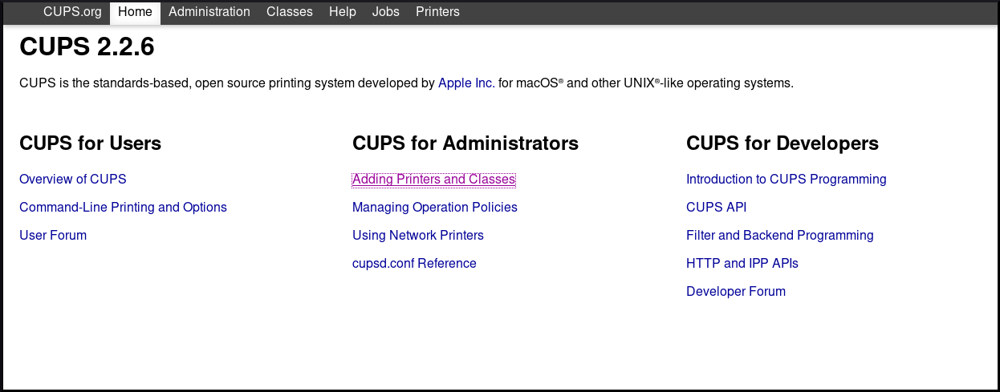
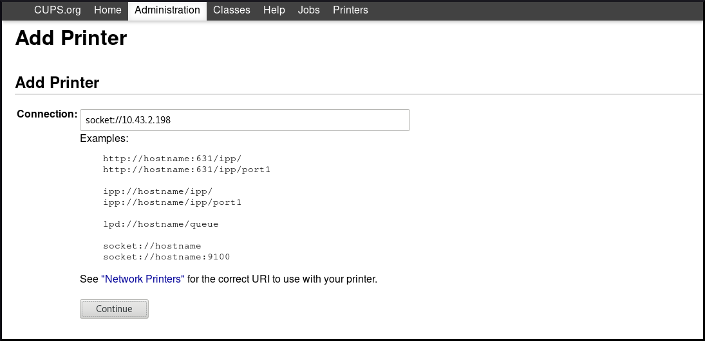
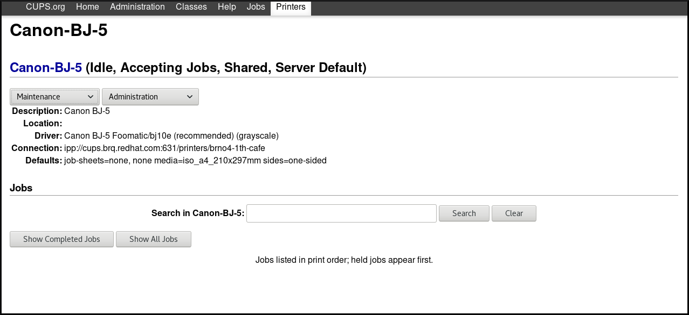
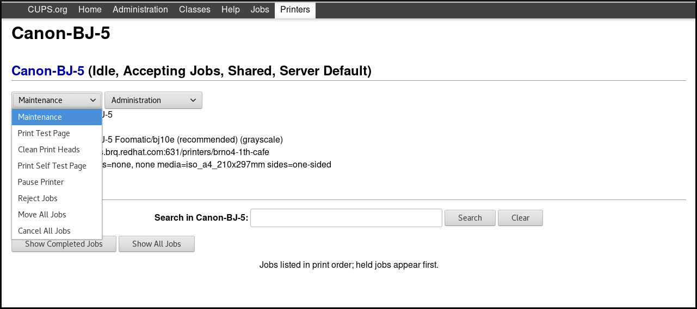

Printing on Red Hat Enterprise Linux 8 is based on the Common Unix Printing System (CUPS).
This documentation describes how to configure a machine to be able to operate as a CUPS server.
This section describes how activate the cups service on your system.
Prerequisites
The
cupspackage, which is available in the Appstream repository, must be installed on your system:~]# yum install cups
Procedure
Start the
cupsservice:~]# systemctl start cups
Configure the
cupsservice to be automatically started at boot time:~]# systemctl enable cups
Optionally, check the status of the
cupsservice:~]$ systemctl status cups
To achieve various tasks related to printing, you can choose one of the following tools:
- CUPS web user interface (UI)
- GNOME Control center
Warning
The Print Settings configuration tool, which was used in Red Hat Enterprise Linux 7, is no longer available.
Tasks that you can achieve by using these tools include:
- Adding and configuring a new printer
- Maintaining printer configuration
- Managing printer classes
Note that this documentation covers only printing in CUPS web user interface (UI). If you want to print using GNOME Control center, you need to have a GUI available. For more information about printing using GNOME Control center, see Managing RHEL systems from your desktop.
This section describes how to access the CUPS web UI and how to configure it to be able to manage printing through this interface.
To access the CUPS web UI:
Allow the CUPS server to listen for connections from network by setting
Port 631in the/etc/cups/cupsd.conffile:#Listen localhost:631 Port 631
Allow your machine to access the CUPS server by including the following in the
/etc/cups/cupsd.conffile:<Location /> Allow from <your_ip_address> Order allow,deny </Location>
Note
Replace
<your_ip_address>with the real IP address of your system.Restart the cups.service:
~]# systemctl restart cups
- Open you browser, and go to http://<IP_address_of_the_CUPS_server>:631/.

All menus except for the Administration menu are now available.
If you click on the Administration menu, you receive the Forbidden message:

To acquire the access to the Administration menu, follow the instructions in the section called “Acquiring administration access to the CUPS web UI”.
This section describes how to acquire administration access to the CUPS web UI.
Procedure
To be able to access the
Administationmenu in the CUPS web UI, include the following in the/etc/cups/cupsd.conffile:<Location /admin> Allow from <your_ip_address> Order allow,deny </Location>
Note
Replace
<your_ip_address>with the real IP address of your system.To be able to access configuration files in the CUPS web UI, include the following in the
/etc/cups/cupsd.conffile:<Location /admin/conf> AuthType Default Require user @SYSTEM Allow from <your_ip_address> Order allow,deny </Location>
Note
Replace
<your_ip_address>with the real IP address of your system.To be able to access log files in the CUPS web UI, include the following in the
/etc/cups/cupsd.conffile:<Location /admin/log> AuthType Default Require user @SYSTEM Allow from <your_ip_address> Order allow,deny </Location>
Note
Replace
<your_ip_address>with the real IP address of your system.To specify the use of encryption for authenticated requests in the CUPS web UI, include
DefaultEncryptionin the/etc/cups/cupsd.conffile:DefaultEncryption IfRequested
With this setting, you will receive an authentication window to enter the username of a user allowed to add printers when you attempt to access the
Administrationmenu. However, there are also other options how to setDefaultEncryption. For more details, see thecupsd.confman page.Restart the
cupsservice:~]# systemctl restart cups
Warning
If you do not restart the
cupsservice, the changes in/etc/cups/cupsd.confwill not be applied. Consequently, you will not be able to obtain administration access to the CUPS web UI.
Additional resources
For more information on how to configure a CUPS server using the /etc/cups/cupsd.conf file, see the cupsd.conf man page.
This section describes how to add a new printer using the CUPS web user interface.
Prerequisites
You have acquired administration access to the CUPS web UI as described in the section called “Acquiring administration access to the CUPS web UI”.
Procedure
- Start the CUPS web UI as described in the section called “Accessing and configuring the CUPS web UI”
Go to
Adding Printers and Classes-Add printer
Authenticate by username and password:

Important
To be able to add a new printer by using the CUPS web UI, you must authenticate as one of the following users:
- Superuser
-
Any user with the administration access provided by the
sudocommand (users listed within/etc/sudoers) -
Any user belonging to the
printadmingroup in/etc/group
If a local printer is connected, or CUPS finds a network printer available, select the printer. If neither local printer nor network printer is available, select one of the printer types from
Other Network Printers, for example APP Socket/HP Jet direct, enter the IP address of the printer, and then clickContinue.
If you have selected for example APP Socket/HP Jet direct as shown above, enter the IP address of the printer, and then click
Continue.You can add more details about the new printer, such as the name, description and location. To set a printer to be shared over the network, use
Share This Printeras shown below.
Select the printer manufacturer, and then click
Continue.
Alternatively, you can also provide a postscript printer description (PPD) file to be used as a driver for the printer, by click on
Browse…at the bottom.Select the model of the printer, and then click
Add Printer.
After the printer has been added, the next window allows you to set the default print options.

After clicking Set Default Options, you will receive a confirmation that the new printer has been added successfully.
This section describes how to configure a new printer, and how to maintain a configuration of a printer using the CUPS web UI.
Prerequisites
You have acquired administration access to the CUPS web UI as described in the section called “Acquiring administration access to the CUPS web UI”.
Procedure
Click the
Printersmenu to see available printers that you can configure.
Choose one printer that you want to configure.
Perform your selected task by using one of the available menus:
Go to
Maintenancefor maintenance tasks.Go to
Administrationfor administration tasks.
-
You can also check completed print jobs or all active print jobs by clicking the
Show Completed JobsorShow All Jobsbuttons.
This section describes how to print a test page to make sure that the printer functions properly.
You might want to print a test page if one of the below conditions is met.
- A printer has been set up.
- A printer configuration has been changed.
Prerequisites
You have acquired administration access to the CUPS web UI as described in the section called “Acquiring administration access to the CUPS web UI”.
Procedure
Go to
Printersmenu, and clickMaintenance→Print Test Page.
This section describes how to set common print options, such as the media size and type, print quality or the color mode, in the CUPS web UI.
Prerequisites
You have acquired administration access to the CUPS web UI as described in the section called “Acquiring administration access to the CUPS web UI”.
Procedure
Go to
Administrationmenu, and clickMaintenance→Set Default Options.
Set the print options.
CUPS provides three different kinds of logs:
- Error log - Stores error messages, warnings and debugging messages.
- Access log - Stores messages about how many times CUPS clients and web UI have been accessed.
- Page log - Stores messages about the total number of pages printed for each print job.
In Red Hat Enterprise Linux 8, all three types are logged centrally in systemd-journald together with logs from other programs.
Warning
In Red Hat Enterprise Linux 8, the logs are no longer stored in specific files within the /var/log/cups directory, which was used in Red Hat Enterprise Linux 7.
This section describes how to access:
- All CUPS logs
- CUPS logs for a specific print job
- CUPS logs within a specific time frame
Procedure
- Filter logs for a specific print job:
$ journalctl -u cups JID=N
Where N is a number of a print job.
This section describes how to configure the location of CUPS logs.
In Red Hat Enterprise Linux 8, CUPS logs are by default logged into systemd-journald, which is ensured by the following default setting in the /etc/cups/cups-files.conf file:
ErrorLog syslog
Important
Red Hat recommends to keep the default location of CUPS logs.
If you want to send the logs into a different location, you need to change the settings in the /etc/cups/cups-files.conf file as follows:
ErrorLog <your_required_location>
Warning
If you change the default location of CUPS log, you may experience an unexpected behavior or SELinux issues.
context: configuring-printing
context: Deploying-different-types-of-servers